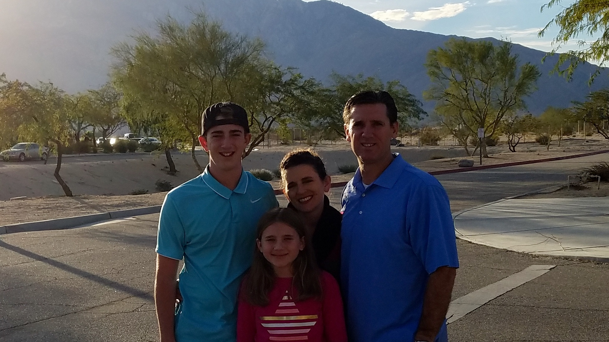

|  |
Flying high above everyone. That is what I think about when I think about my dream job. I want to go to a four year college and earn a degree in applied science for aviation. Once I earn my degree I want to finish getting my pilot's license. Once I do this I want to get a job at a major airline. I want to work at an airline because it cobines two passions of mine, helping people and flying. In conclusion aviation ia my passion and something I want to do in my life.
Through my seventeen years of life I have found out a lot about myself and grown as a person. Through school I have become hungry and ambitious through my school work and passion with aviation. I also through this hard work I believe I have become a great people person. With these great peronality traits I have completed some of my best achievements in my young life. I have become a student pilot with over 20 hours of flight time and I have met some of the top empolyees in the operations at Southwest Airlines. I have also kept a GPA of 4.28 through the course of highschool.
All of these expiernces have tought me important life skills and common sense. I know how to repair issues with my car, such as, changing the oil and changing a tire. I aslo use these lessons to help those around me like my younger sister and my friends who may be younger. In the end I know I have so much to learn and room to mature from the things I have seen and done.
In conclsuion my seventeen short years of life have allowed me to adopt a hard work ethic and experince things some kids only imagine. I have found my passion at a young age with a supportive family around me and many other people. In the end I would like to thank you, the reader for taking time to read this and to feel free to explore the rest of the page. Also, if there is any questions you may have my contact information is avilable.
Thank You again.
|